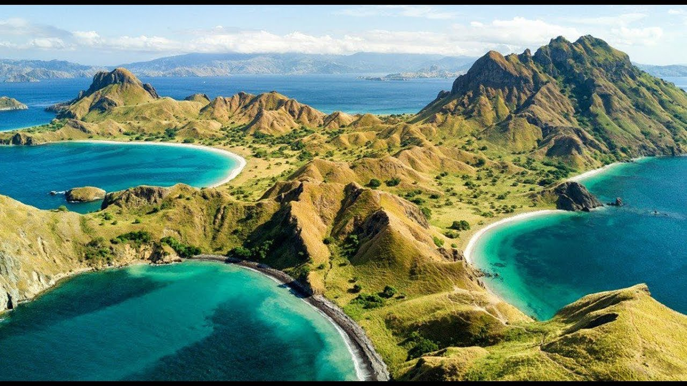
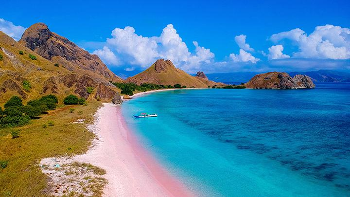
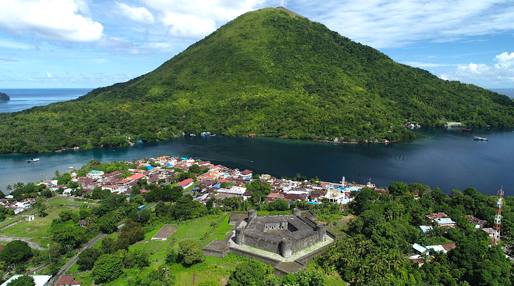
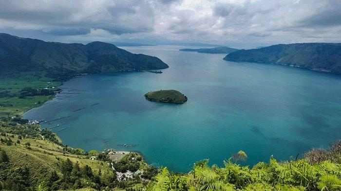
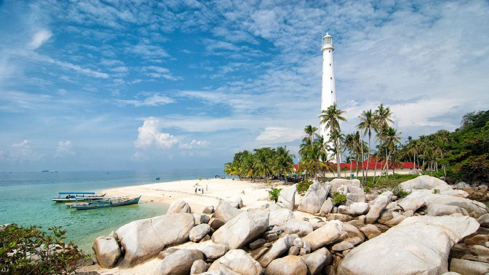
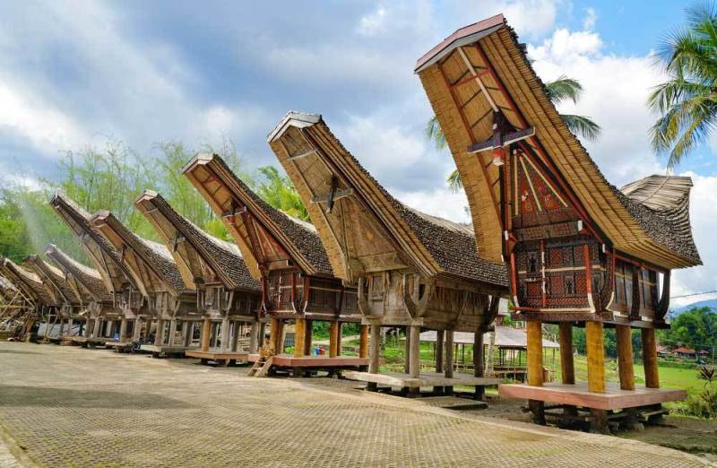
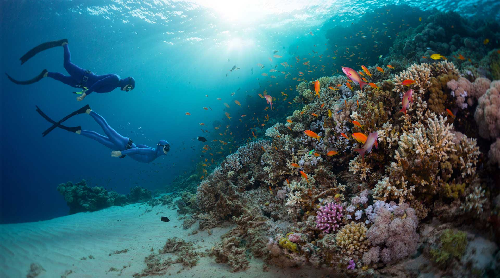
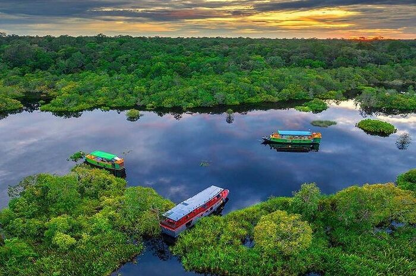

Bali
Bali Province
Experience the magical island of the gods with pristine beaches, vibrant culture, and lush landscapes. Enjoy traditional dances, visit ancient temples, and relax on white sand beaches.
Book This Destination
Labuan Bajo
East Nusa Tenggara
Discover the fishing town known for its beautiful beaches, breathtaking caves, and scenic views. Visit Komodo Island, Padar Island, and enjoy exploring the indeginous village of Wae Rebo.
Book This Destination
Lombok
West Nusa Tenggara
Explore the unique and amazing beaches of Lombok. Visit the three Gili Islands, Pink Beach, Mount Rinjani, and delve deeper into learning about the cultures of the Sasak people.
Book This Destination
Yogyakarta
Special Region of Yogyakarta
Discover the cultural heart of Java with ancient temples, traditional arts, and royal heritage. Visit Borobudur and Prambanan temples, explore the Sultan's Palace, and shop for batik crafts.
Book This DestinationMount Bromo
East Java
Witness breathtaking sunrises over the volcanic landscape of Mount Bromo. Experience the unique culture of the Tengger people and trek across the sea of sand to the crater's edge.
Book This Destination
Banda Neira
Maluku
Uncover the spice island charm of Banda Neira, rich in colonial history and surrounded by coral reefs. Visit 17th-century forts, hike volcanoes, and dive into pristine waters teeming with marine life.
Book This Destination
Raja Ampat
Southwest Papua
Dive into the crystal-clear waters of this paradise known for its biodiversity and stunning marine life. Explore pristine beaches, hidden lagoons, and vibrant coral reefs in this underwater wonderland.
Book This Destination
Lake Toba
North Sumatra
Explore the world's largest volcanic lake and the cultural heritage of the Batak people. Visit Samosir Island, relax in hot springs, and enjoy the cool highland climate of Sumatra.
Book This Destination
Belitung
Bangka Belitung Islands
Explore the serene island of Belitung, famous for its white-sand beaches, granite boulders, and turquoise waters. Visit Lengkuas Island, swim in crystal-clear seas, and enjoy peaceful island life.
Book This Destination
Tana Toraja
South Sulawesi
Experience the unique funeral rituals and traditional architecture of the Toraja people. Marvel at boat-shaped houses, ancient burial sites, and lush mountain landscapes.
Book This Destination
Bunaken
North Sulawesi
Dive into one of the world's best marine parks with over 390 species of coral and thousands of fish species. Explore vertical walls, colorful reefs, and underwater caves.
Book This Destination
Tanjung Puting
Central Kalimantan
Cruise through riverside forests to see orangutans in their natural habitat. Experience life on a traditional klotok boat and witness the diversity of Borneo's wildlife.
Book This Destination